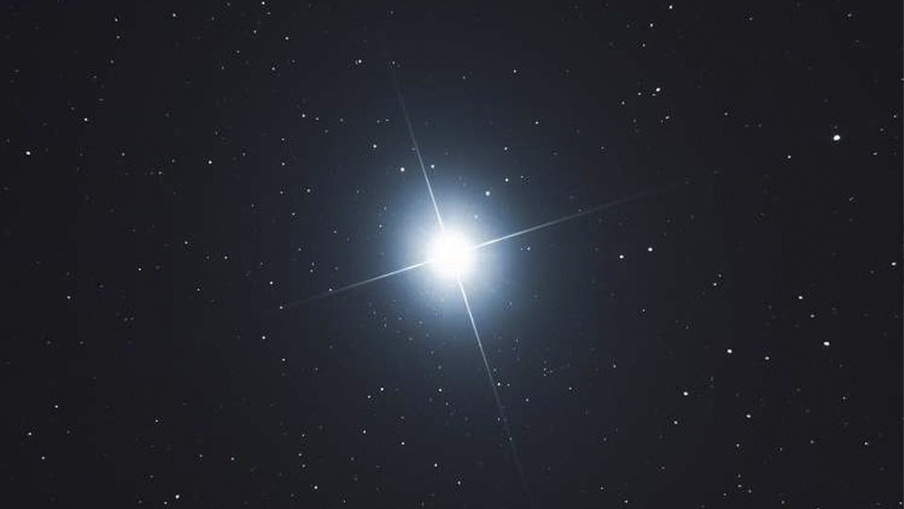

Mirar el Cielo, para mí, es mirar una clara comprobación de algo mucho más grande que nos trasciende a todos. Algo que no se puede explicar con palabras ni mucho menos entender con la mente. ¿Cómo puede ser tamaña perfección? ¿Cómo puede haber tanta sutileza precisa? Las estrellas, los planetas y sus recorridos, las constelaciones son verdaderas muestras de una maravilla vastísima que está allí fuera, y también está aquí dentro, dentro de cada uno de nosotros.
El famoso Kybalión dice “como es adentro es afuera, como es arriba es abajo”. Está enseñanza nos muestra claramente que mirando el cielo podemos mirar nuestro propio corazón, y que mirando a nuestro prójimo y a nuestras situaciones de vida, también podemos mirarnos a nosotros mismos (tal vez como un espejo, mostrándonos la “otra cara”, aquella que nos cuesta mucho más observar de nosotros mismos, la sombra de nuestro psique).
Kosmos en griego quiere decir “todo ordenado” (representado por el eje Virgo-Piscis). El Cosmos tiene un orden divino, superior, que nos hace observar “más allá” lo que está “más acá”. El Cosmos tiene un orden, lo cual comprueba una inteligencia superior que lo ha creado de esta manera. No puedo concebir el Cielo como un mero estallido casual, sino más bien como la manifestación de lo Insondable que nos trasciende. Einstein mismo dijo que el observar el universo lo hacía plantearse la existencia de un “Espíritu Superior” cuando escribió que “cualquier persona que esté seriamente involucrada en la búsqueda de la ciencia acaba convenciéndose de que algún tipo de espíritu se hace manifiesto en las leyes del Universo, uno que es enormemente superior al espíritu del hombre”.
“¿Anudas tú los lazos de las Pléyades o desatas las cuerdas del Orión?” (Job, 38:31).
Tuve la bendición de nacer de madre judía y de padre católico. Yo misma, siendo bien pequeña, cada vez que alguien me preguntaba ¿y vos, de qué religión sos? o ¿qué religión elegís: la judía o la católica?, yo simplemente sonreía y respondía ¡yo soy budista! (supongo que, para no dejar afuera de mi elección a ninguno de mis padres, que, si bien no eran para nada religiosos, ¡la sangre tira!). En lo profundo de mi corazón, no comprendía por qué las religiones generaban tantos motivos de guerras y peleas ya que, desde mi pequeña visión infantil, todas hablaban de lo mismo con distintas palabras. Ya de más grande leí que para la Kabbalah la interpretación del Génesis no era que “Dios había echado al hombre del paraíso” sino que “el hombre había echado a Dios”. ¿De dónde lo había echado? ¡Pues nada más y nada menos que de su propio corazón! Esta enseñanza calo hondo en mí. Con el correr del tiempo fui comprendiendo que el Cielo y el Infierno son creados por nuestro propio corazón. Echando a Dios –o como prefieras llamarlo- de nuestro corazón, nos separamos de todo lo inmenso, inconmensurable, insondable, y divino que habita en nosotros. Y entonces caímos en el peor de los infiernos: la sensación de que nada verdadero existe, de que todo depende de uno y nada más que de uno, de que el mundo es una porquería, de que tenemos que estar siempre a la defensiva, de que hay malos y buenos, de que nuestra vida es llevada por un “destino” en el que no tenemos ni la menor injerencia, de que no poseemos poder alguno, y la peor de todas: de que somos malos por naturaleza.
Por esto mismo es que, para mí, es una hermosísima señal que el día del Astrólogo sea el día de Reyes. Porque ambas cosas están unidas. Porque un Astrólogo está profundamente conectado con el Cielo, y lo reverencia, y lo admira, y se sabe pequeño ante su gran sabiduría. La estrella de Belén guio a los Reyes a lo más sublime: encontrarse con un nuevo Santo que iría a enseñarnos que sin amor, nada sirve. ¿Por qué entonces la Astrología no puede guiarnos también a cada uno de nosotros a encontrar eso sublime dentro nuestro? Ese mismo amor que todos tenemos para dar y que nos surge, la mayoría de las veces, cuando dejamos de pensar tanto y simplemente abrimos el corazón. Mirar el Cielo, para mí, es mirar esa inteligencia insondable que nos habita. Mirar el Cielo es reconocer la magia de lo divino que trasciende nuestra pequeña mente apegada a una identidad falsa llamada Ego. Mirar el Cielo es verse pequeño ante la inmensidad de la creación. Mirar el Cielo es recordar que Dios está tan afuera como adentro. Mirar el Cielo el día de Reyes es recordar que ese mismo Cielo que miramos fue dado por ese Origen, por esa Fuente, de la cual todos venimos y nos une en esencia. Es recordar que el corazón misericordioso de Jesús, si así lo deseamos, puede habitar en cada uno de nosotros.
“Y cuando levantes los ojos hacia el cielo y veas el sol, la luna, las estrellas y todo el Ejército de los cielos, no te dejes seducir ni te postres para rendirles culto. Porque ellos son la parte que Dios ha dado a todos los pueblos que están bajo el Cielo” (Deuteronomio 4:19).